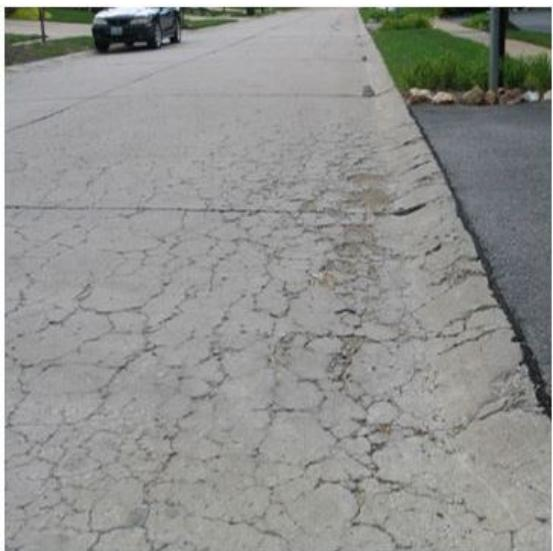
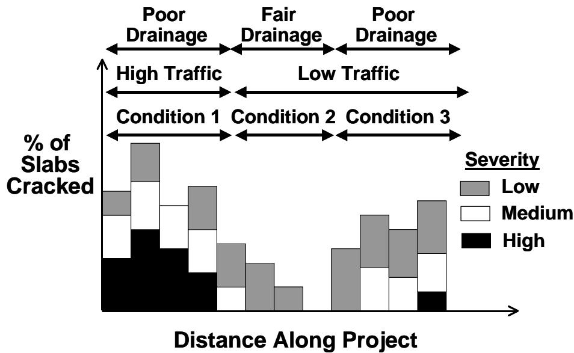
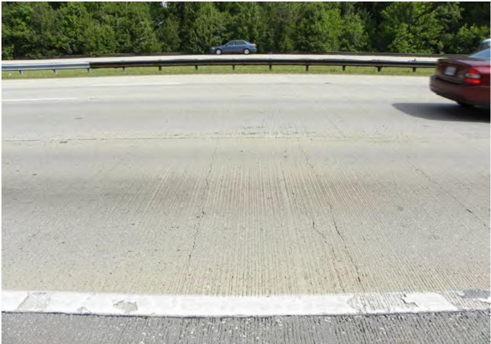

Material-Related Surface Defects in Concrete Pavements
Material‑related surface defects in concrete pavements are a suite of concrete‑pavement distresses—such as various forms of cracking, surface roughness, potholes, chemical reactions and joint deterioration—that impair ride quality, structural performance and slab stability[1][2]. Their detection follows a staged condition assessment that starts with visual driving and walk‑over surveys, adds drainage checks for moisture intrusion, maps the type, severity and extent of each distress, and culminates in a Pavement Condition Index (PCI) calculation where scores in the high‑80s to upper‑90s indicate excellent condition[3][4]. The intensity and distribution of these defects are driven by interacting factors including traffic loading, subgrade type (with high traffic on silty‑clay soils producing the most severe cracking), concrete mix design, weather variations and deicing practices, guiding prevention, mitigation and repair strategies to extend service life[5][6].
CP Tech Center Guides reports covering “Material-Related Surface Defects in Concrete Pavements” also include the following subtopics: Concrete Bleeding-Induced Surface Defects and Material/Chemical Factors in Pavement Distress.
Concrete Bleeding-Induced Surface Defects constitute a specific weak, non-durable layer that forms when excess bleed water rises and creates a moisture-rich crust prone to scaling and delamination. [2][7] Material/Chemical Factors in Pavement Distress serves as the broader evaluation framework for such material-related performance problems, utilizing multi-step inspection regimes to identify mechanisms like D-cracking or alkali-silica reaction driving structural faults. [2][3]
Sources (7)
Sub-concepts (2)
Purpose and treatment objectives
The material‑related surface defects targeted by the treatment comprise a suite of concrete pavement distresses that impair ride quality and structural performance, including block cracking, roughness, and deep potholes; cracking, raveling, rutting and other forms of surface deterioration; alkali‑silica reactions, D‑cracking, and joint deterioration; and loss of slab stability under truck loading. Condition assessment relies on visual surveys and the Pavement Condition Index (PCI), with PCI used to assign a numerical value to the pavement condition and values ranging from zero for a failed pavement to 100 for perfect condition; the goal is to maintain PCI scores in the excellent range—typically between the high‑80s and upper‑90s. The severity of slab cracking varies with traffic loading and subgrade type, with worst condition (condition ) occurs in an area with high trafficlevels and a silty clay subgrade. Note that all of these surface defects can be affected by changing weather conditions, unique mix design characteristics, and deicing/anti‑icing practices. [1][2][4][6]
The figure below illustrates examples of transverse and diagonal cracking in concrete pavements.
 Transverse and diagonal cracking in concrete pavements [2]
Transverse and diagonal cracking in concrete pavements [2]
The image displays a section of gray concrete pavement featuring a prominent, irregular crack running vertically through the center. A yellow painted line intersects the pavement horizontally across the frame. This figure illustrates transverse and diagonal cracking, which are distinct fractures that typically extend through the entire thickness of the slab.
[1] — Ch. 7 (p. 95); [2] — Ch. 13 (p. 45); [4] — Ch. 1 (p. 24); [6] — Ch. 3 (pp. 43–44)
The guides agree that the overarching objective for material‑related surface defects in concrete pavements is first to prevent deterioration through appropriate prevention and mitigation measures. Evaluation of these distresses is intended to pinpoint those that need repair, quantify the required work, and select treatment alternatives so that damage is corrected and the pavement’s service life is prolonged. When addressing specific defects such as slab cracking, the aim is to identify the deficiencies, estimate repair quantities, and thereby restore functionality while extending service life. Where time‑series condition data are available, they provide information on rates of progression, supporting efforts to slow deterioration over time. [2][3][6]
The following figure illustrates common examples of material-related cracks discussed in this chapter.

Material-Related Surface Defects in Concrete Pavements: Material-Related Cracks [2]The image displays a concrete pavement surface characterized by an extensive network of interconnected cracks. This pattern is consistent with the description of material-related distresses typified by a network of multiple, closely spaced cracks.
[2] — Ch. 13 (p. 45); [3] — Ch. 3 (pp. 49–50); [6] — Ch. 3 (pp. 43–44)
Distress characterization and causes
The guides note that material‑related surface defects such as slab cracking are typically mapped along the pavement length using a strip chart, which reveals that the most severe cracking tends to occur in sections with high traffic volumes and silty‑clay subgrades. The worst condition (Condition 1) occurs in an area with high traffic levels and a silty clay subgrade, whereas the best performance is observed in an area with low traffic levels and a granular subgrade. Inner lanes of multilane facilities may exhibit significantly less distress or lower severity levels of distress than the outer lane. The extent of cracking varies along the pavement length, as illustrated by strip charts that plot severity from best to worst conditions; lane‑by‑lane analysis can further isolate inner versus outer lanes. When time‑series condition data are available, information can be obtained regarding the time that the various deficiencies began to appear and their relative rates of progression. Identifying these locations and severities enables engineers to estimate repair quantities and select appropriate treatments; severe cracking identified through this survey signals a need for corrective treatment, and if left unaddressed could affect pavement serviceability, thereby compromising safety and operational performance. [3][6]
The following figure illustrates an example of such a strip chart used to map these material-related surface defects along the pavement length.

Example project strip chart. [6]The figure displays a strip chart plotting the percentage of cracked slabs along the length of a pavement project, categorized by severity levels including low, medium, and high.
[3] — Ch. 3 (pp. 49–50); [6] — Ch. 3 (pp. 43–44)
The underlying mechanisms that drive material‑related surface defects in concrete pavements are multiple and interrelated. Moisture entry is highlighted by drainage assessments, which “determine if moisture intrusion into the pavement structure is a contributing factor to the distress” and require “Pay particular attention to the functioning of the drainage outlets.” Inadequate removal of water due to drainage problems or elevation/grade restrictions further accelerates cracking, raveling and rutting. Structural capacity is compromised when heavy traffic loads combine with weak or compressible support; the most severe slab‑cracking occurs where “high traffic levels and a silty clay subgrade” intersect, while sections on granular subgrades with lower traffic exhibit markedly better performance. These observations are reinforced by noting that “cut and fill areas, depth of ditches, and condition of drainage outlets (if present) could also be added to the strip chart to provide additional insight.” Intrinsic material deficiencies such as “alkali‑silica reactions,” “D‑cracking,” and “joint deterioration from various causes” degrade slab integrity and reduce “slab stability under truck loading,” leading to rocking or failure. Additional construction factors, including the presence of paving fabric that can interfere with the pavement’s ability to act as a unified layer, also hasten distress development. [2][3][4][5][6]
The figure below illustrates concrete pavement joint faulting, a common manifestation of these material-related surface defects.
 Concrete pavement joint faulting measurement [2]
Concrete pavement joint faulting measurement [2]
The image displays a close-up view of a concrete pavement where a ruler is being used to measure the vertical displacement across an open longitudinal joint. This visual evidence illustrates faulting, which is defined as the difference in elevation across a joint or crack due to loss of load transfer and support. This distress represents a material-related surface defect that impairs ride quality and slab stability, often resulting from factors such as water trapped in base layers.
[2] — Ch. 19 (p. 467); [3] — Ch. 3 (pp. 49–50); [4] — Ch. 1 (p. 24); [5] — Step 2. Perform a Visual Inspe… (p. 17); [6] — Ch. 3 (pp. 43–44)
Applicability and treatment selection
Material‑related surface defects such as slab cracking are most relevant on concrete pavements that experience high traffic volumes and rest on silty‑clay subgrades, conditions identified as producing the worst cracking. Conversely, sections with low traffic levels and granular subgrades exhibit the least distress, indicating that defect analysis is less critical there. Additional site characteristics—including cut‑and‑fill locations, ditch depth, and the condition of drainage outlets—also affect the occurrence and severity of surface distress and should be considered when deciding whether material‑related defect treatment is appropriate. [3][6]
The following figure illustrates how these material and site conditions can lead to potential subbase deterioration near CRCP structural distress.
 Cross-section of a concrete pavement showing subbase disintegration and pumping near a structural punchout. [6]
Cross-section of a concrete pavement showing subbase disintegration and pumping near a structural punchout. [6]
The figure displays a cross-sectional view of a concrete pavement structure where the underlying granular layers are shown to be eroded or ‘disintegrated’ beneath the slab. Red lines indicate cracks in the surface, and arrows point to areas of ‘considerable pumping and excess water,’ illustrating how moisture intrusion leads to structural failure such as punchouts.
[3] — Ch. 3 (pp. 49–50); [6] — Ch. 3 (pp. 43–44)
Condition assessment and timing
The guides recommend a staged inspection program to decide whether material‑related surface defects require treatment. First, a visual survey of the concrete pavement is performed, systematically noting distresses such as block cracking, roughness, deep potholes and any reflective cracking that may originate from the base. “The visual surveys focused on pavement distresses found at the project sites.” The visual inspection records the type, severity and extent of all surface distress.
An initial driving survey conducted at or near the posted speed limit provides an overall ride‑quality assessment. “First, a driving survey at or near the posted speed limit is used to get an overall assessment of the roadway.” This is followed by a detailed walking (walk‑over) survey that maps each observed defect. “Next, a walking survey may be warranted to map the type, severity, and extent of each noted distress type.”
A drainage assessment follows to identify moisture intrusion that could be contributing to the distress. “Lastly, a drainage assessment determines if moisture intrusion into the pavement structure is a contributing factor to the distress.” The combined visual‑drainage survey satisfies the first step required by all sources.
For quantitative evaluation, a detailed distress survey using the FHWA LTPP Distress Identification Manual is conducted; this manual defines each concrete‑pavement distress, its severity levels and measurement units. “The LTPP Distress Identification Manual describes the appearance of each distress type, depicts the associated severity levels (where defined), and describes the standard units in which the distress is measured.” The recorded values are entered into a Pavement Condition Index calculation following ASTM D6433‑18 or the Army Corps PCI method. “The PCI was used to assign a numerical value to the pavement condition based on the observed distresses.” “Performance condition index values range from zero for a failed pavement to 100 for a pavement in perfect condition.”
Supplementary quantitative checks include faulting measurements at highway speed (AASHTO R 36), systematic surface imaging (R 86) and transverse profile surveys (R 87) to locate deformation, rutting or joint issues. “AASHTO R 36, Standard Practice for Evaluating Faulting of Concrete Pavements, which provides a method for fault measurements at highway speeds.”
When resources allow, an automated distress survey is performed using a van equipped with non‑contact sensors such as high‑speed cameras, lasers or 3‑D imaging systems; the collected image intensity and elevation data are post‑processed to produce quantified defect type, extent and precise location. “Automated surveys are typically conducted using vans equipped with specialized data and video collection equipment.” “Data collected from automated distress surveys require postprocessing using either automated or semiautomated methods.”
Additional performance measurements—roughness, texture, surface friction, deflection responses, subgrade soil type and traffic volume—are plotted along the pavement length to highlight zones where material‑related distress exceeds typical levels. “Primary distresses such as slab cracking are often plotted, but other important performance parameters such as joint load transfer, roughness, texture, and surface friction could also be included.”
If the visual or PCI results indicate possible material‑related problems (e.g., alkali‑silica reaction, D‑cracking, joint deterioration), locations of concern are earmarked for coring and laboratory testing to confirm the nature and severity of the defect. “Identify locations for pavement coring, which may be needed to further investigate the causes and extent of the pavement distresses.” “For concrete pavements and composite pavements, it is important to identify any materials‑related distress (MRD). This may include alkali‑silica reactions, D‑cracking, and joint deterioration from various causes.”
During the walk‑over, slab stability under truck loading is observed; rocking behavior signals underlying structural issues. “note slab stability under truck loading and observe whether the slabs are stable or rocking.”
Finally, the subgrade/subbase support condition, drainage problems, elevation/grade restrictions and presence of paving fabric are evaluated to ensure that any recommended repair or overlay will be compatible with existing support conditions. “Determine the type, severity, and extent of any pavement distress(es) and the condition of the subgrade/subbase support.” “Identify any drainage problems and potential restrictions regarding elevation and grade.” “Identify the presence of paving fabric, which could interfere with the asphalt’s ability to behave as a single layer.”
The combined results of visual, ride‑quality, walking, drainage, quantitative distress, PCI, faulting, automated survey, performance measurements, coring and support evaluations define where material‑related surface defects exist and whether treatment is required. [1][2][3][4][5][6]
[1] — Ch. 7 (p. 95); [2] — Ch. 19 (p. 467); [3] — Ch. 3 (pp. 43–50); [4] — Ch. 1 (p. 24); [5] — Step 2. Perform a Visual Inspe… (p. 17); [6] — Ch. 3 (pp. 38–44)
Materials and repair details
The guides emphasize that a visual inspection is the first step in assessing material‑related surface defects. “A visual survey is the first step in assessing the type, severity, and extent of pavement distress.” Ride quality and obvious distresses are used to establish the general condition, and probable causes recorded during the walk‑over guide the selection of compatible repair materials: “Ride quality and obvious distresses determine the general condition of the pavement,” and “probable cause(s) are noted for reference when determining the most feasible repair techniques.”
Material properties that govern defect performance include concrete mix design and inherent reactions. “The performance of material‑related surface defects in CRCP is strongly influenced by the concrete’s mix design and the environmental conditions to which the pavement is exposed.” Unique mix‑design characteristics, weather fluctuations, and deicing/anti‑icing chemicals further affect cracking, raveling, or rutting: “Note that all of these surface defects can be affected by changing weather conditions, unique mix design characteristics, and deicing/anti‑icing practices.” Additional material‑related distress may arise from chemical reactions and joint problems: “materials-related distress (MRD). This may include alkali‑silica reactions, D‑cracking, and joint deterioration from various causes,” and slab stability under truck loading must be verified: “note slab stability under truck loading and observe whether the slabs are stable or rocking.”
Existing pavement conditions exert a dominant influence on treatment performance. The condition of the underlying base is critical: “The condition of the underlying base strongly influences material‑related surface defects; block cracking, excessive roughness or deep potholes in the base are linked to observed distresses.” When the base material is compatible with the surface layer, defect severity remains low and PCI values remain high: “when the base material is compatible with the surface layer, defect severity remains low.” Traffic level and subgrade type also dictate distress severity: “the worst condition (Condition 1) occurs in an area with high traffic levels and a silty clay subgrade,” whereas “The best performance is observed in an area with low traffic levels and a granular subgrade.” Cut‑and‑fill zones, ditch depth, drainage outlet condition, moisture intrusion, and lane position further modify distress intensity: “cut and fill areas, depth of ditches, and condition of drainage outlets (if present), could also be added to the strip chart,” and “inner lanes of multilane facilities may exhibit significantly less distress or lower severity levels of distress than the outer lane.” A drainage assessment is required to identify moisture intrusion: “drainage assessment determines if moisture intrusion into the pavement structure is a contributing factor to the distress.”
Compatibility requirements for repairs and overlays demand sound subgrade/subbase support, adequate drainage, and unobstructed bonding surfaces. The guides state that “Determine the type, severity, and extent of any pavement distress(es) and the condition of the subgrade/subbase support,” and that “Identify any drainage problems and potential restrictions regarding elevation and grade.” Presence of intervening paving fabric must be avoided because it can prevent a cohesive layer: “Identify the presence of paving fabric, which could interfere with the asphalt’s ability to behave as a single layer.”
Collectively, these material properties, compatibility considerations, and existing pavement conditions dictate the performance of treatments for material‑related surface defects in concrete pavements. [1][2][3][4][5][6]
[1] — Ch. 7 (p. 95); [2] — Ch. 13 (p. 45), Ch. 19 (p. 467); [3] — Ch. 3 (pp. 49–50); [4] — Ch. 1 (p. 24); [5] — Step 2. Perform a Visual Inspe… (p. 17); [6] — Ch. 3 (pp. 43–44)
Treatment procedures
Implementation of measures to control material‑related surface defects in CRCP must consider the prevailing environmental conditions, because all identified distress types are sensitive to changes in weather. In addition, the specific concrete mix design and any deicing or anti‑icing chemicals applied can exacerbate or mitigate cracking, raveling, rutting, and other distresses, so these parameters need to be evaluated before construction or maintenance activities. Implementation begins with a visual‑survey sequence: “First, a driving survey at or near the posted speed limit is used to get an overall assessment of the roadway.” This step establishes ride‑quality impressions while traffic continues under normal speed limits. “Next, a walking survey may be warranted to map the type, severity, and extent of each noted distress type,” allowing field personnel to record precise locations and probable causes. A final drainage check determines whether moisture intrusion is contributing to the observed defects. The sequence of these visual‑survey steps dictates the order in which field personnel and their vehicles are used, ensuring that equipment deployment aligns with traffic conditions and environmental constraints. [2]
The following figure illustrates common surface defects that may be identified during these visual surveys.
 Map cracking on a concrete pavement surface. [2]
Map cracking on a concrete pavement surface. [2]
The image displays a close-up view of a gray concrete surface characterized by a network of fine, interconnected cracks resembling the pattern of a spider web or dried mud. This visual evidence illustrates map cracking, which is identified in the source text as a minor deformity limited to the surface that can impact functional performance and aesthetic appeal without significantly detracting from structural integrity.
[2] — Ch. 13 (p. 45), Ch. 19 (p. 467)
Quality and workmanship
The inspection begins with a visual confirmation of the type, severity and extent of all pavement distresses. Inspectors must “identify all pavement distresses” and also “determine the type, severity, and extent of any pavement distress(es)”. Materials‑related distress (MRD) should be specifically noted; this may include “alkali‑silica reactions, D‑cracking, and joint deterioration from various causes.” The condition of the supporting layers must be evaluated – “the condition of the subgrade/subbase support” as well as any “drainage problems and potential restrictions regarding elevation and grade.” Presence of a paving fabric should be identified because it can affect slab behavior. Slab stability under traffic loads is observed, noting whether “slabs are stable or rocking.” Core sampling of the concrete is recommended to assess material quality, and an optional analysis of support conditions may be performed to verify structural integrity before further work. [4][5]
[4] — Ch. 1 (p. 24); [5] — Step 2. Perform a Visual Inspe… (p. 17)
A satisfactory level of material‑related surface distress in concrete pavements is indicated by a high Pavement Condition Index (PCI), with values in the upper eighties to high nineties signifying an excellent condition and acceptable performance. The PCI scale runs from zero for a failed pavement to one hundred for a perfect pavement, so maintaining PCI scores well above the mid‑80s meets the acceptance criteria for minimal distress and adequate service life. [1]
[1] — Ch. 7 (p. 95)
Performance and service life
Material‑related surface defects—such as block cracking, roughness, deep potholes, slab cracking, raveling, and rutting—are captured through detailed distress surveys and incorporated into the Pavement Condition Index (PCI). The PCI calculation “incorporates each distress type, its severity and extent,” causing the index to decline from 100 toward lower values, which “signals a decline in structural integrity, reduced functional performance, diminished durability, and a shorter projected service life.” When defects are minor, projects have recorded “PCI rating for the projects … ranged from 88 to 97,” placing them in an excellent condition range and indicating that “such material defects have limited impact on functionality, durability and expected service life when they remain minor.” Conversely, more severe slab‑cracking conditions—often associated with high traffic levels and a silty‑clay subgrade—raise roughness and lower surface friction, thereby impairing smoothness, texture, and friction and “reducing durability and shortening the expected service life.” Distress and drainage surveys enable “Distresses and other deficiencies requiring repair can be identified and the corresponding repair quantities can be estimated,” providing permanent documentation of existing condition. Post‑treatment monitoring allows “the comparison of pavement performance before and after treatment” and supports prediction models that demonstrate how effective repairs can restore structural integrity, improve functional attributes, and extend the pavement’s useful lifespan. [1][3][6]
The following figure illustrates common examples of these material-related surface defects in concrete pavements.
 A concrete pavement surface exhibiting D-cracking and associated raveling near a joint. [3]
A concrete pavement surface exhibiting D-cracking and associated raveling near a joint. [3]
The image displays a section of rigid pavement characterized by extensive map cracking radiating from a linear joint or crack. A significant area of material loss, identified as D-cracking in the figure label, reveals exposed aggregate and loose stones along the pavement edge.
[1] — Ch. 7 (p. 95); [3] — Ch. 3 (pp. 49–50); [6] — Ch. 3 (pp. 38–44)
Material‑related surface defects that commonly recur in concrete pavements are reported as “block cracking, surface roughness and deep potholes”, “slab cracking”, “minor reflective cracking”, “alkali‑silica reactions”, “D‑cracking”, “joint deterioration”, and loss of slab stability observed as “rocking” under traffic loads. These distresses often appear together with “increased roughness and reduced surface friction”.
The guides indicate that the primary drivers are the condition of the underlying base or subgrade. The most severe cracking is associated with “the worst condition (Condition 1) occurs in an area with high traffic levels and a silty clay subgrade” and also described as occurring under “high trafficlevels and a silty clay subgrade”, while better performance corresponds to “The best performance is observed in an area with low traffic levels and a granular subgrade” and “low traffic levels and a granular subgrade”. Additional influences include “cut and fill areas, depth of ditches, and condition of drainage outlets”. Concrete mix characteristics and joint conditions are cited as sources for alkali‑silica reaction, D‑cracking, and joint deterioration, and truck loading stresses intensify slab stability loss. Across the sources, no severe pavement distress was attributed to the cement‑stabilized FDR base. [1][3][4][6]
The following figure illustrates how unstabilized asphalt bases concentrate stress on the subgrade compared to cement-stabilized full-depth reclamation.
 Comparison of stress distribution in unstabilized versus cement-stabilized asphalt base layers. [1]
Comparison of stress distribution in unstabilized versus cement-stabilized asphalt base layers. [1]
The figure illustrates a cross-section comparison between an unstabilized granular base and a full-depth reclamation (FDR) with cement base, showing how each layer distributes stress to the subgrade under a tire load.
[1] — Ch. 7 (p. 95); [3] — Ch. 3 (pp. 49–50); [4] — Ch. 1 (p. 24); [6] — Ch. 3 (pp. 43–44)
Monitoring and follow-up
After a repair or surface treatment of material‑related defects in concrete pavements, the treated segment must be re‑evaluated through a formal post‑treatment distress survey. The survey should follow an agency‑adopted measurement protocol—such as the FHWA long‑term pavement performance (LTPP) detailed survey or the PCI method—to record type, severity and extent of any remaining or new distresses. In the FHWA’s long‑term pavement performance (LTPP) program, a detailed distress survey procedure and standardized distress definitions are available. A systematic visual inspection records block cracking, spalling, potholes, reflective cracking, roughness, friction, etc., and the observations are entered into a Pavement Condition Index calculation; The PCI was used to assign a numerical value to the pavement condition based on the observed distresses, producing a rating from 0 to 100 that can be compared with pre‑treatment values. Ratings in the high‑80s to upper‑90s indicate an excellent post‑treatment condition. In addition, the segment should be re‑surveyed with an automated distress‑survey vehicle; Automated surveys are typically conducted using vans equipped with specialized data and video collection equipment. The vehicle captures high‑resolution imagery and laser/LiDAR data that reveal cracks, spalls, joint damage, and drainage features. Data collected from automated distress surveys require postprocessing using either automated or semiautomated methods, with a technician reviewing algorithm‑generated maps and applying visual corrections as needed. All post‑treatment data—visual PCI values, automated‑survey maps, and strip‑chart plots of distress severity along the project length—are archived as permanent documentation and used for baseline comparison. Periodic follow‑up surveys using the same methods should be scheduled throughout the service life to verify that condition ratings remain within acceptable limits and to detect any new distress; an additional survey is recommended if a long interval existed between the pre‑treatment survey and construction. [1][3][6]
The following figure illustrates how deflection varies along a project segment.
 Plot of normalized maximum pavement deflection variation along a roadway project. [6]
Plot of normalized maximum pavement deflection variation along a roadway project. [6]
The figure displays a line graph plotting the normalized maximum deflection in millimeters against the distance along the roadway in meters, illustrating how surface deformation varies spatially across the project length. This data is used to assess the uniformity of support conditions and identify subsections where distress or poor moisture conditions may be adversely affecting the pavement structure. By mapping these deflection values to specific locations, engineers can correlate structural performance with material-related surface defects and subgrade characteristics.
[1] — Ch. 7 (p. 95); [3] — Ch. 3 (pp. 47–50); [6] — Ch. 3 (pp. 38–44)
Across the guides, a consistent set of conditions signals that concrete pavement exhibiting material‑related surface defects requires additional maintenance, repair, or rehabilitation. When visual surveys reveal distresses such as block cracking, surface roughness, deep potholes, alkali‑silica reaction, D‑cracking, deteriorated joints, raveling, faulting, loss of joint load transfer, poor texture or low friction, and the observed Pavement Condition Index (PCI) begins to trend downward toward lower values—approaching zero for a failed pavement—the segment is deemed to have exceeded acceptable condition limits. Degraded ride quality and obvious surface distresses identified during an initial driving survey further indicate that attention is needed. A subsequent walking survey that maps increasing severity or expanding extent of cracks, raveling, rutting, or other noted distress types reinforces the need for corrective action. Slab instability or rocking under truck loading, compromised subgrade or subbase support, and drainage problems such as moisture intrusion or water accumulation also constitute performance trends that trigger maintenance, repair, or rehabilitation. When time‑series condition data show accelerating rates of distress initiation and progression, the downward PCI trend confirms a loss of structural integrity and operational performance that must be addressed. [1][2][3][4][5][6]
The figure below illustrates closely spaced transverse cracks in a 25-year-old continuously reinforced concrete pavement.

Transverse cracking pattern in a concrete pavement surface. [2]The image displays a close-up view of a concrete road surface characterized by closely spaced, fine transverse cracks running perpendicular to the direction of travel. This visual evidence illustrates material-related surface defects in concrete pavements, specifically demonstrating how continuous reinforcement is intended to keep these hairline random cracks from opening to provide adequate load transfer through aggregate interlock.
[1] — Ch. 7 (p. 95); [2] — Ch. 19 (p. 467); [3] — Ch. 3 (pp. 43–50); [4] — Ch. 1 (p. 24); [5] — Step 2. Perform a Visual Inspe… (p. 17); [6] — Ch. 3 (pp. 43–44)
Related Concepts
References
- G. D. Reeder, D. S. Harrington, M. E. Ayers, and W. Adaska, "Guide to Full-Depth Reclamation (FDR) with Cement," National Concrete Pavement Technology Center, Rep. SR1006P, 2017. [Online]. Available: https://www.cptechcenter.org/wp-content/uploads/2019/01/Guide_to_FDR_with_Cement_Jan_2019_reprint.pdf
- D. Harrington, M. Ayers, T. Cackler, G. Fick, D. Schwartz, K. Smith, M. B. Snyder, and T. Van Dam, "Guide for Concrete Pavement Distress Assessments and Solutions: Identification, Causes, Prevention, and Repair," National Concrete Pavement Technology Center, 2018. [Online]. Available: https://www.cptechcenter.org/wp-content/uploads/2019/01/concrete_pvmt_distress_assessments_and_solutions_guide_w_cvr.pdf
- K. Smith, M. Grogg, P. Ram, K. Smith, and D. Harrington, "Concrete Pavement Preservation Guide (Third Edition)," National Concrete Pavement Technology Center, 2022. [Online]. Available: https://www.cptechcenter.org/wp-content/uploads/2022/08/concrete_pvmt_preservation_guide_3rd_edition_web.pdf
- G. Fick, J. Gross, M. B. Snyder, D. Harrington, J. Roesler, and T. Cackler, "Guide to Concrete Overlays (Fourth Edition)," National Concrete Pavement Technology Center, 2021. [Online]. Available: https://www.cptechcenter.org/wp-content/uploads/2021/11/guide_to_concrete_overlays_4th_Ed_web.pdf
- G. Smith and J. Gross, "Guide to Concrete Overlays of Asphalt Parking Lots (Second Edition)," National Concrete Pavement Technology Center, 2022. [Online]. Available: https://www.cptechcenter.org/wp-content/uploads/2022/06/overlays_parking_lots_guide_2nd_ed_web.pdf
- K. D. Smith, T. E. Hoerner, and D. G. Peshkin, "Concrete Pavement Preservation Workshop," National Concrete Pavement Technology Center, 2008. [Online]. Available: https://www.cptechcenter.org/wp-content/uploads/2018/08/preservation_reference_manual.pdf
- P. Taylor, T. Van Dam, L. Sutter, and G. Fick, "Integrated Materials and Construction Practices for Concrete Pavement: A State-of-the-Practice Manual," National Concrete Pavement Technology Center, Rep. Part of InTrans Project 13-482; TPF-5(286), 2019. [Online]. Available: https://www.cptechcenter.org/wp-content/uploads/2019/12/IMCP_manual.pdf